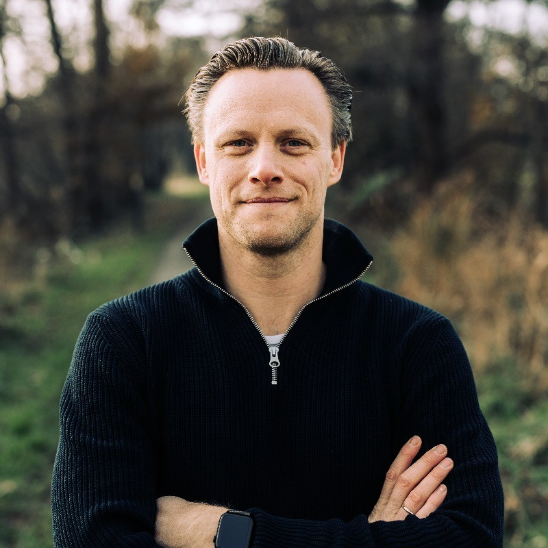

Joost Kamstra
Product Discovery Coach
As an experienced Product Discovery Coach, I empower organizations to create products that truly matter. With over a decade of experience in leading product companies, I help teams transform their product discovery process, resulting in increased value creation and reduced waste.
Services
I offer a range of services to help your team excel in product discovery:
-
Team Workshops
Immersive sessions that equip your team with practical discovery techniques, leading to immediate improvements in idea generation and validation.
-
Discovery Process Design
Tailored discovery frameworks that fit your organization's unique context and goals, ensuring a sustainable and effective approach to product discovery.
-
Hands-on Coaching
Direct guidance during live discovery activities, providing real-time feedback and optimization to enhance your team's skills and outcomes.
About Me
With extensive experience at companies like KPN, DPG Media, Ahold-Delhaize, and Sissy-Boy, I bring a wealth of knowledge in product management and coaching to help your team excel in product discovery.
My approach is rooted in modern product management principles, focusing on creating products that are not just viable, but valuable, usable, and feasible. I believe in the power of effective discovery to drive innovation and create products that truly resonate with customers.
My diverse background spans both B2B and B2C environments, allowing me to adapt discovery methods to various business models and customer types. Whether you're a startup or an established enterprise, I can help you navigate the complexities of product discovery and drive meaningful results.
Contact
Ready to transform your product discovery?
Whether you're struggling with product-market fit, looking to innovate in a crowded market, or simply want to make your discovery process more efficient and effective, I'm here to help. Let's work together to uncover opportunities that will delight your customers and drive your business forward.
Contact Me